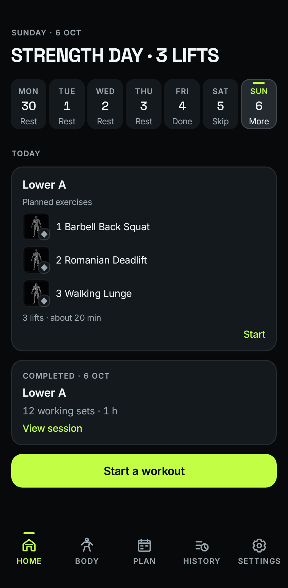
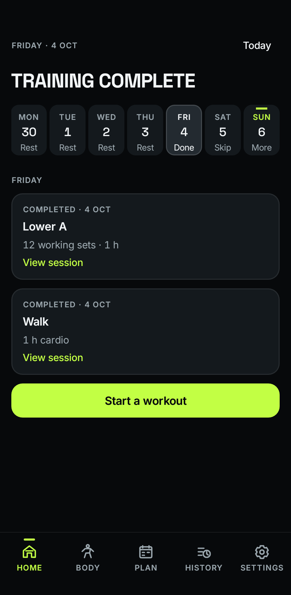
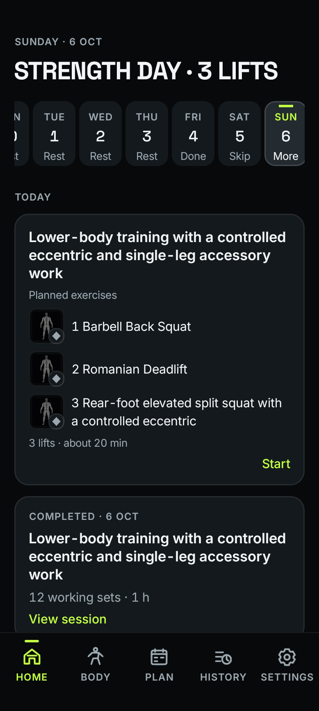
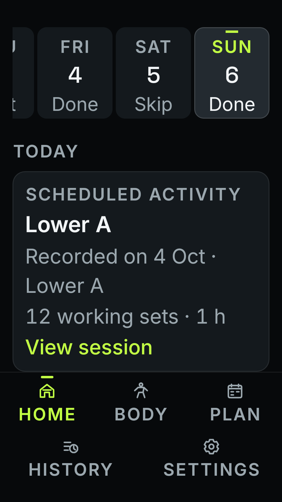
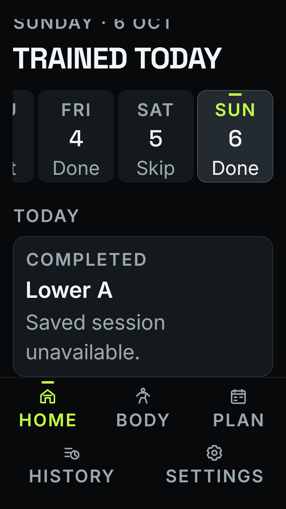
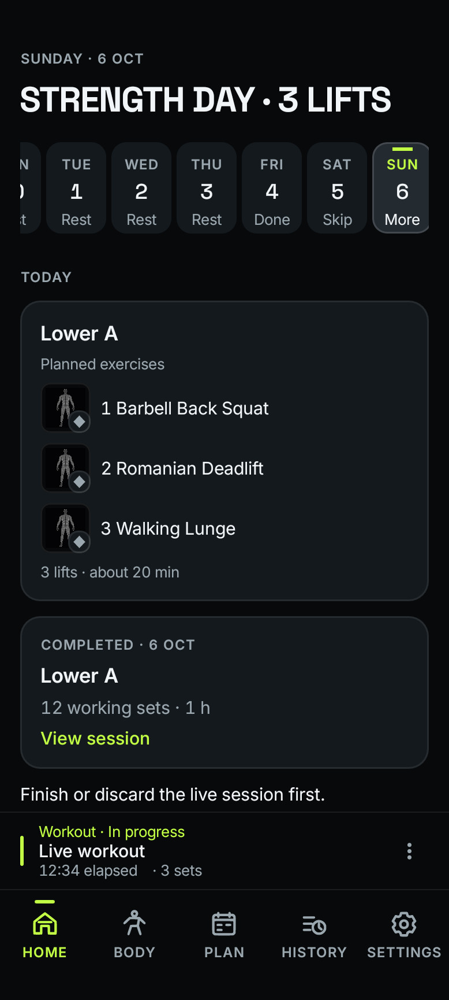

Temper · native redesign · packet 4 · in progress
The selected day, clearly.
Planned work and recorded activity have distinct presentations. Historical completion never says today. The shared day selector preserves touch targets and scrolls when space is limited.
52 API 29 native checks and 2,587 unit tests passed. Lint, static checks and debug builds passed. These are synthetic native fixtures, including actual HomeScreen/ViewModel and shipping navigation. All 56 API 29 reference comparisons passed; API 26 passed 27 layout cases and 25 existing journeys. API 36 also passed 52/52. Hosted and integrated acceptance remain pending. Home changes are not in Debug 79.
Native evidence

Planned exercises remain visible alongside recorded work.

Historical completion uses its recorded date and opens the saved session.

Long routine and exercise names wrap without ellipsis.

Cross-date completion identifies when the linked session was recorded.

A missing record is explained without inventing performed exercises.

A live workout keeps its resume bar and prevents a second start.